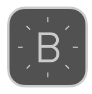
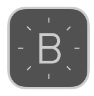
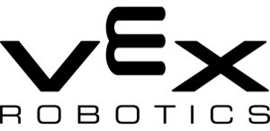
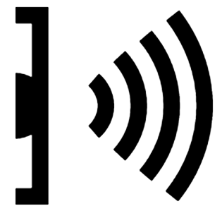
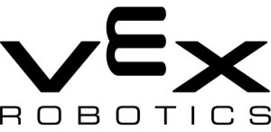
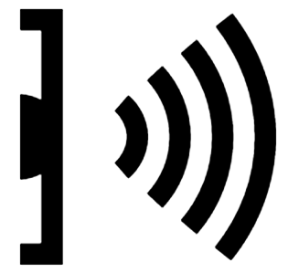

Throughout this four year long project, our arm progressed from a mechanical arm to an electromechanical arm integrated with Arduino. This arm accomplished three types of tasks: Object Relocation, Dexterity, and Distance Accuracy.
SKILLS LEARNED

Arduino, Circuit-Building, Google SketchUp, Additive Manufacturing

 


 


